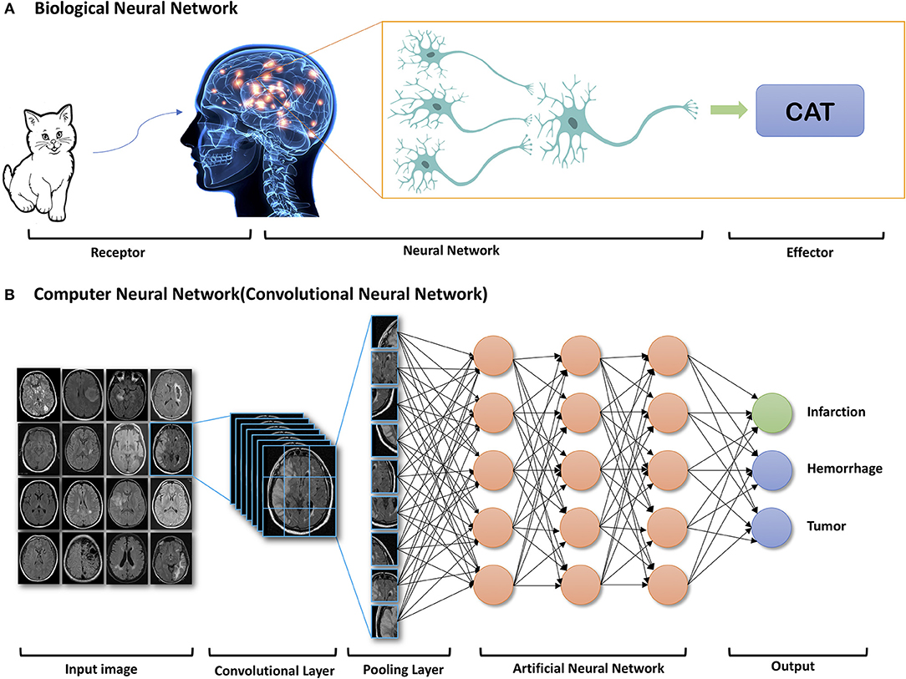
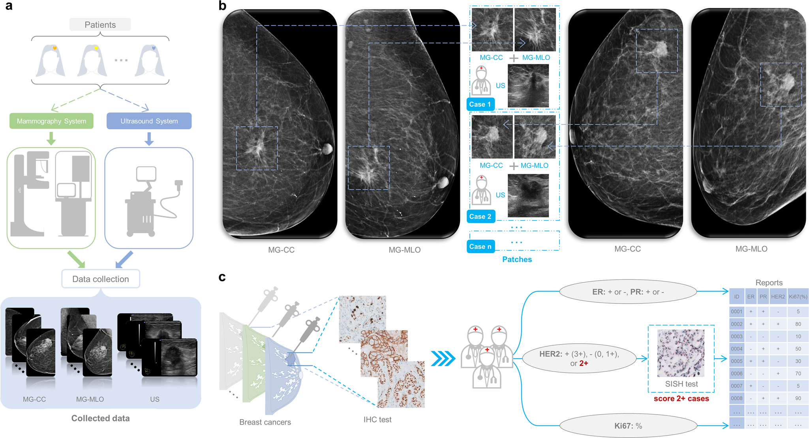
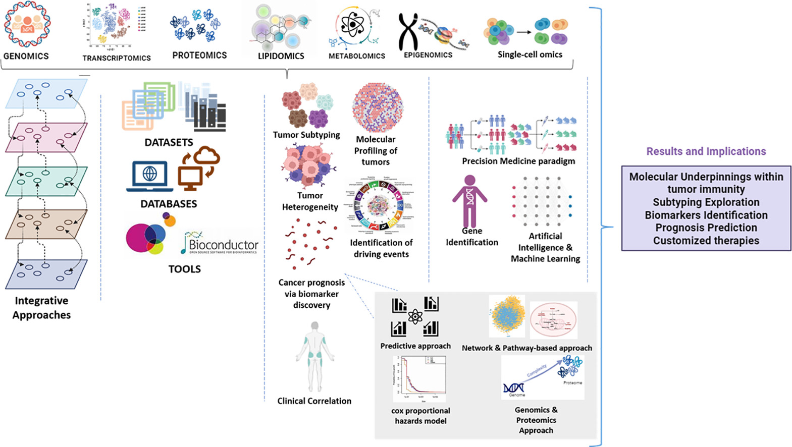
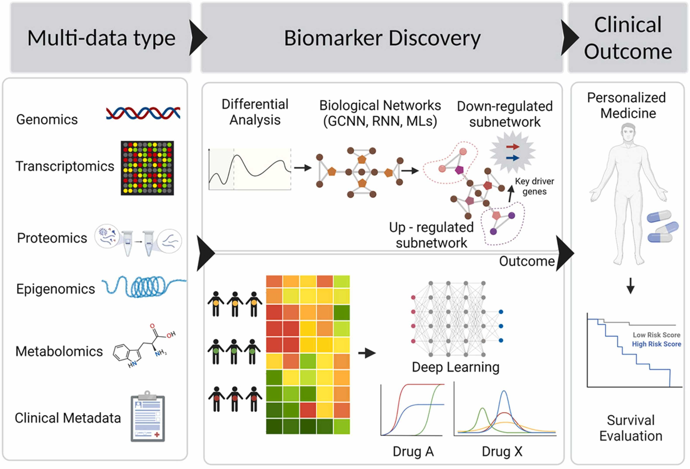
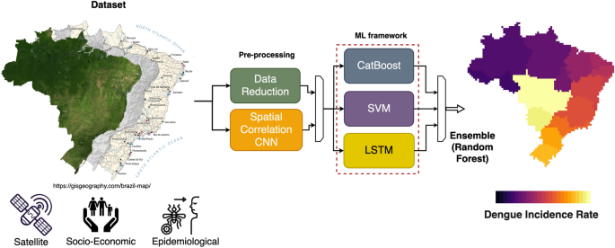
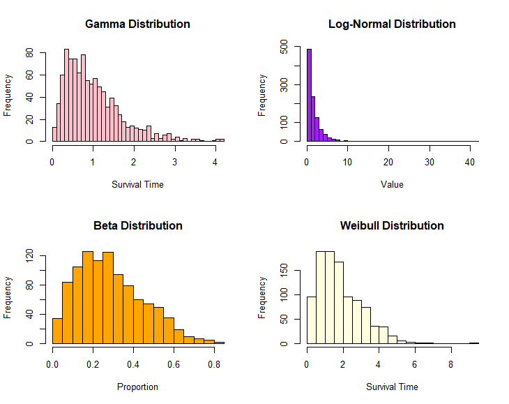
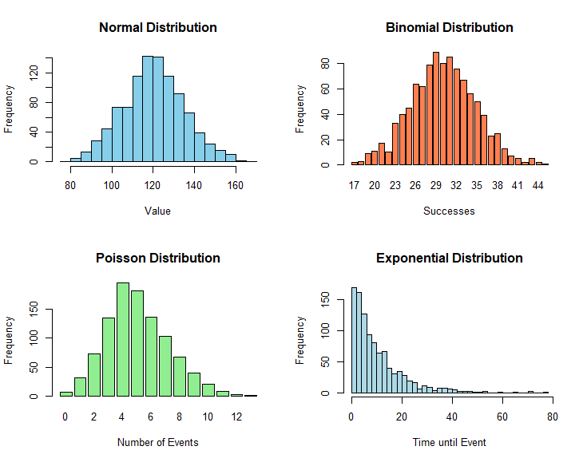
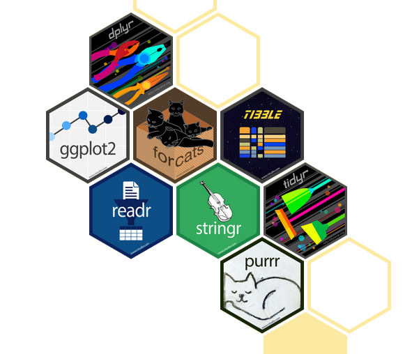

Statistical Analysis with R for Research
![]()
Welcome!
Welcome to the Statistical Analysis with R for Research Workshop! This 1-day intensive program is designed to equip researchers, students, and professionals with essential R programming skills for statistical analysis.
Who We Are
About Us
Legal Information
Center for Health Innovation, Research, Action, and Learning (CHIRAL Bangladesh) is a non-profit, non-governmental organization currently undergoing registration with the Registrar of Joint Stock Companies and Firms (RJSC) as CHIRAL Foundation. Our Taxpayer Identification Number (TIN): 154198266266.
Mission
Solving public health problems and improving quality of life through modern biomedical research.
Vision
To be a leading multidisciplinary research organization leveraging data and AI for impactful solutions.
What We Do
Building Next Generation Scientists
- Training on Python, R and SPSS for Research Data Analysis
- Training on Multi-omics (Genomics, Proteomics, Transcriptomics) Big Data for Cancer Research
- Training on Machine Learning and Deep Learning for Public Health/Bioinformatics
- Training on Remote Sensing and GIS for Public Health
- Research Internship Program
Research Groups
-
Population Health Studies Division (PHSD)
- Cancer Epidemiology, Neuroepidemiology, Vector-born Diseases, Mental Health
-
Big Bioinformatics Lab (BBL)
- Cancer Bioinformatics, Computational Epigenetics, Neurodegenerative Diseases and Cancer
-
Geospatial Health Research Group (GHRG)
- Climate Impact on Health, AI Integration with Geospatial Health
-
AI for Health (AI4H)
- AI Application in Health focusing on Cancer and Neurological Disorders
Our Collaborators
Project: Breast cancer prevention and awareness breast self-examination among school and college-going girls in Bangladesh
Project: One-Health Assessment of Emerging Antimicrobial Resistance Genes (ARGs) in Bangladeshi Livestock, Soil, Environment, and Human: Tackling the Crisis Together funded by the Bangladesh Academy of Sciences and United States Department of Agriculture (BAS-USDA).
Project: RNA-Seq Meta Analysis on Heat Shock Genes
AI and Neuro-Imaging Techniques

AI for Breast Cancer Detection

Multi-omics Big Data for Cancer Research

Deep Learning and Multi-omics Big Data

Machine Learning Approach to Forecast Dengue Outbreaks

Workshop Overview
Learning Objectives
-
Data Manipulation:Learn how to import, clean, and transform data in R for research purposes. -
Data Visualization:Master techniques for creating effective data visualizations in R to communicate research findings visually. -
Statistical Analysis:Develop skills in conducting statistical analysis using R for hypothesis testing, regression analysis, and other statistical tests. -
Reproducible Research:Implement principles of reproducible research using R to document and organize code, data, and analysis for replicability.
Workflow

Course Platforms
We are constantly trying to improve content! Please refresh/download materials before class.
Session Format
- Lecture with live coding (possibly “Interactive”)
- Practical experience
- Participants must run code with the instructors using the provided R script
- 10 mins breaks each session - timing may vary
Required Textbooks
The following books purchased and are available online!
What is R?
R is a language and environment for statistical computing and graphics developed in 1991.
R is the open source implementation of the S language, which was developed by Bell laboratories in the 70s.
The aim of the S language, as expressed by John Chambers, is “to turn ideas into software, quickly and faithfully”
R is both open source and open development.
The aim of the S language, as expressed by John Chambers, is “to turn ideas into software, quickly and faithfully”

Why R?
Free (open source)
High level language designed for statistical computing
Powerful and flexible - especially for data wrangling and visualization
Extensive add-on software (packages)
R is popular – and increasing in popularity.
R runs on all platforms.(Windows, Linux and Mac)
R is being used by the biggest tech giants(google, facebook, microsoft, twitter)
Strong community
What you will learn?
Probability Distributions


Publication-ready Descriptive Tables
| Characteristic |
Overall N = 2001 |
Drug A N = 981 |
Drug B N = 1021 |
|---|---|---|---|
| Age | 47 (38, 57) | 46 (37, 60) | 48 (39, 56) |
| Unknown | 11 | 7 | 4 |
| Grade | |||
| I | 68 (34%) | 35 (36%) | 33 (32%) |
| II | 68 (34%) | 32 (33%) | 36 (35%) |
| III | 64 (32%) | 31 (32%) | 33 (32%) |
| 1 Median (Q1, Q3); n (%) | |||
Publication-ready Analytical Tables
| Characteristic |
Overall N = 2001 |
Drug A N = 981 |
Drug B N = 1021 |
p-value2 |
|---|---|---|---|---|
| Age | 47 (38, 57) | 46 (37, 60) | 48 (39, 56) | 0.7 |
| Unknown | 11 | 7 | 4 | |
| Grade | 0.9 | |||
| I | 68 (34%) | 35 (36%) | 33 (32%) | |
| II | 68 (34%) | 32 (33%) | 36 (35%) | |
| III | 64 (32%) | 31 (32%) | 33 (32%) | |
| 1 Median (Q1, Q3); n (%) | ||||
| 2 Wilcoxon rank sum test; Pearson’s Chi-squared test | ||||
Publication-ready Regression Tables
| Characteristic | N | OR1 | 95% CI1 | p-value |
|---|---|---|---|---|
| Age | 183 | 1.02 | 1.00, 1.04 | 0.10 |
| Grade | 193 | |||
| I | — | — | ||
| II | 0.95 | 0.45, 2.00 | 0.88 | |
| III | 1.10 | 0.52, 2.29 | 0.81 | |
| 1 OR = Odds Ratio, CI = Confidence Interval | ||||
Introduction to the Tidyverse - Echosystem

Framework for Easy Statistical Modeling, Visualization, and Reporting